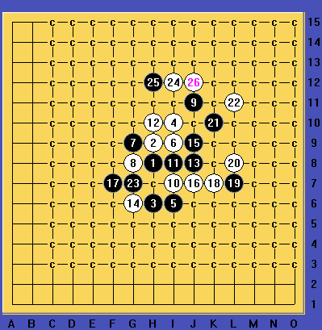
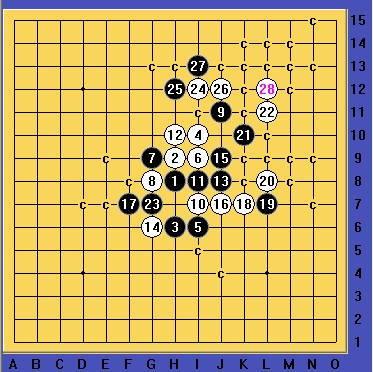

瑞星团12必败的25
#1 瑞星团12必败的25 作者：山城刀客 发表时间：2012-8-4 3:55:58

瑞星团12开局，17之前为大定式，18变招，最近一两年流行，究竟孰优孰劣实在搞不清楚！！！20很强悍的一招，21选择活3,22上挡都没有问题。23选择了连攻带防的一手棋，确立了黑棋左下的优势，24上挡黑棋活2同时自己形成眠3，这一手也是传统老定式！黑棋经过计算，发现下面没杀，于是在上面跟防走了25，看起来似乎没有任何问题，实际上却给了白棋机会，这一手意外的26地毯。
棋谱：
 1.rar
1.rar瑞星实在太过神秘，这样类似的局面真不知道还有多少？
［ 屏蔽 于 2012-8-4 8:24:53 时花20金币送鲜花一朵］
［ 屏蔽 于 2012-8-4 8:24:53 时花20金币送鲜花一朵］
［ 屏蔽 于 2012-8-4 8:24:53 时花20金币送鲜花一朵］
［ 屏蔽 于 2012-8-4 8:24:53 时花20金币送鲜花一朵］
［ 屏蔽 于 2012-8-4 8:24:53 时花20金币送鲜花一朵］
［ 冰糖雪梨 于 2012-8-4 11:21:30 时花20金币送鲜花一朵］
［ 冰糖雪梨 于 2012-8-4 11:21:30 时花20金币送鲜花一朵］
［ 冰糖雪梨 于 2012-8-4 11:21:30 时花20金币送鲜花一朵］
［ 冰糖雪梨 于 2012-8-4 11:21:30 时花20金币送鲜花一朵］
［ 冰糖雪梨 于 2012-8-4 11:21:30 时花20金币送鲜花一朵］
［ 冰雪笑醉 于 2012-8-4 11:48:32 时花20金币送鲜花一朵］
［ 冰雪笑醉 于 2012-8-4 11:48:32 时花20金币送鲜花一朵］
［ 冰雪笑醉 于 2012-8-4 11:48:32 时花20金币送鲜花一朵］
［ 冰雪笑醉 于 2012-8-4 11:48:32 时花20金币送鲜花一朵］
［ 冰雪笑醉 于 2012-8-4 11:48:32 时花20金币送鲜花一朵］
［ 流逝 于 2012-8-4 12:55:00 时花20金币送鲜花一朵］
［ 流逝 于 2012-8-4 12:55:00 时花20金币送鲜花一朵］
［ 流逝 于 2012-8-4 12:55:00 时花20金币送鲜花一朵］
#2 Re:瑞星团12必败的25 作者：冰糖雪梨 发表时间：2012-8-4 11:20:53
 12,这个谱发现点错误哦。
12,这个谱发现点错误哦。 求赞美~~~~~~~~
求赞美~~~~~~~~
［ 山城刀客 于 2012-8-4 11:25:50 时花20金币送鲜花一朵］
［ 山城刀客 于 2012-8-4 11:25:50 时花20金币送鲜花一朵］
#3 Re:瑞星团12必败的25 作者：白衣神童小剑魔 发表时间：2012-8-4 11:24:21
26走22上边也能地毯吧？#4 Re:瑞星团12必败的25 作者：山城刀客 发表时间：2012-8-4 11:32:08

这个28就可以了，不知道怎么会出现这样的BUG，郁闷呀!
#5 Re:瑞星团12必败的25 作者：屏蔽 发表时间：2012-8-4 13:15:46
2011beta45-x64 默认设置秒杀……也没啥问题#6 Re:瑞星团12必败的25 作者：潇洒 发表时间：2012-8-4 22:05:27
。。屏蔽老师开始用64位系统了。。我还在用32位的。。
#7 Re:瑞星团12必败的25 作者：屏蔽 发表时间：2012-8-4 23:36:49
我这个win7都用了一年半了……#8 Re:瑞星团12必败的25 作者：秋风雾语 发表时间：2012-8-5 14:24:10
win7貌似也有32位的操作系统